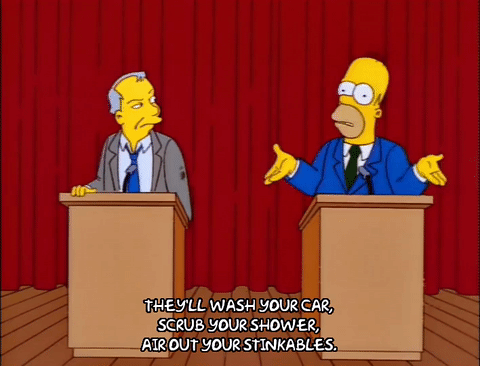

Comenzaremos con una WebQuest con la que lograremos aprender muchas de las cosas acerca de las estructuras que necesitamos saber para alcanzar la meta de la construcción de nuestro producto final.
Comenzaremos con una WebQuest con la que lograremos aprender muchas de las cosas acerca de las estructuras que necesitamos saber para alcanzar la meta de la construcción de nuestro producto final.
Estructuras con Minecraft
3. Explorando acerca de las estructuras
¡Explora por ti mismo!
Busca con tu compañero información en Internet sobre una de las preguntas que encontrarás a continuación. Explora diferentes webs y elige la información que consideres más oportuna. Anotad las respuestas a dichas preguntas en vuestro cuaderno.
Pregunta 1
¿Qué es una estructura?
Pregunta 2
¿Qué tipos de estructuras existen?
Pregunta 3
¿Qué tipos de esfuerzos podemos encontrar?
Pregunta 4
¿Qué son fuerza, carga y esfuerzo?
Ahora explicad a vuestros compañeros lo que habéis encontrado mediante la webquest. Recordad que durante el debate un miembro aleatorio de vuestro grupo será elegido para responder sobre alguna de las preguntas.
¡A debatir!
Una vez que has investigado acerca de tu pregunta y has encontrado la respuesta que consideras que más te satisface llega el turno del debate.

Recordad que las ideas clave que surjan del debate serán recogidas por el profesor en la pizarra.
Lectura facilitada
Motus dice ¿Cómo te has sentido?
¿Cómo te has sentido durante el debate? ¿Te ha gustado trabajar con tus compañeros y compañeras? ¿Qué es lo que más valoras de trabajar en grupo?
Obra publicada con Licencia Creative Commons Reconocimiento No comercial Compartir igual 4.0